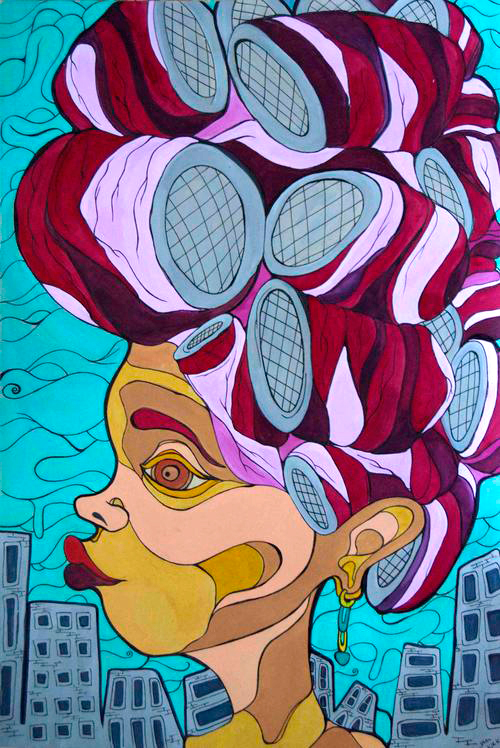
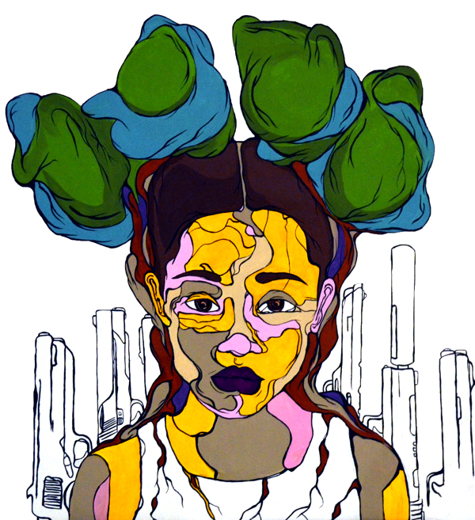

Sam Kirk
For Sam Kirk, the word artist encompasses many things. With a background in dance, and a decade of advertising experience, art wasn’t too far off of the spectrum. She wears quite a few different hats, including painter, muralist, designer, architect, interior designer, provocateur, and conversationalist to name a few. Her work, thematically, deals largely with cultural and societal narratives and causes in regards to race, gentrification, sexuality, gender and is often community driven. She even donates 25 percent of her sales to organizations throughout the nation that she believes in.
As a Chicago Native, Kirk grew up on the South side, raised within a multi-cultural family, so it isn’t uncommon that her work seeks to explore the collision of culture and the stories that lie within those spheres. She splits her time between her studio in Pilsen and New York, living and working between the two. She is constantly on the move, doing commissions, commercial work, and her own signature vibrantly colored works of art. She paints and illustrates on canvas and unconventional palettes, from wooden doors to parking tickets, creating a patchwork effect of colors and designs the the faces, bodies and people she depicts in her work.amfm: You said your art is created to tell a story. What story are you trying to tell through your work as a whole?
sam kirk: Most often it’s the everyday, the simple things we do daily that get overshadowed. I am interested in the intersection of culture and identity, especially when they conflict with each other. I’m interested in the beauty, love and essence of different social stratifications, the day-to-day joys, habits, addictions, and struggles. I’m fascinated with a woman or man that walks down the street with his or her own flair and swag that makes them original. I am drawn to the homeless kid who is only homeless because he is gay and his family disowned him, but despite his world giving up on him, he hasn’t given up on himself.amfm: What is the favorite or most important story you feel you have told through a single piece?
sam kirk: My favorite parts are those that celebrate the everyday and ordinary of the middle class. We have so much flavor in our creations.amfm: You are multiple nationalities and cite culture and identity as two key components of your practice. Why or how does exploration of these themes or facets of yourself influence or add depth to your work?
sam kirk: I am a mixed race, gay woman who grew up on the Southside of Chicago. Growing up, we were always the different family and that fueled my interest in other cultures. My home housed parents that looked very different than each other and children that were a clear combination of that. My mother was very particular about what schools we went to and made sure that we were engaging with kids and families different than us. I thank her for that. We learned early on how to navigate the layers of the cultures in our blood, and we created a place in many communities. When you grow up in a segregated city, you often find yourself choosing groups that are most similar to who you are and what you look like. For me, it wasn’t about what I looked like, it was about whom I was and luckily I had multiple facets to my identity. In a city that is very black or white, this worked out really well for my interests. I was able to jump between different social groups and had the ability to relate to them because of what my mother integrated into our upbringing. I loved going to my friends houses and trying the different foods, hearing foreign languages. My parents were working-class so we moved a lot and, jumping from neighborhood to neighborhood this further fueled my interest in culture and identity.amfm: How does it show itself in your work?
sam kirk: This is something I have been playing with for a while. How does one show what multiculturalism or the intersection of culture/identity looks like? It’s a question I come to often. Bit-by-bit I am figuring that out. I think, to date, my series with women in curlers highlights this. It’s one of the only hair products I have seen women of every ethnicity use. The color blocking in some of my pieces reflect this. When I choose to use different skin tones in combination with alternate colors. Conceptually, I feel that I am just getting started. I recently opened up a second studio in Brooklyn, specifically to study culture and the integration of people on a larger scale. I can definitely say in late 2015, early 2016 you will see this develop more into my work. The pieces I am currently working on capture the crossroads of culture and identity. I've spent years exploring this in my work, trying to interpret it, and in this current moment, I’m finally grasping what the core of it will be and the vision of what it looks like.amfm: You said before that you used to shy away from incorporating your sexuality into your work and after being in New York, you sort of awakened to the idea. What was the catalyst for you?
sam kirk: The people in New York have a way of not giving a shit, in both good and bad ways. They boldly own every piece of who they are, and either you respect it or you deal with it. For instance for race and sexuality here, one can be racist/homophobic all he/she wants, but it must suck because you will be smashed up against people of all kinds, walks of life, scents of spices wafting from store fronts, languages on a daily basis. New York is saturated with so many layers and layers of differences within its people. When you engage with these people, the conversations you have make you realize the layers you are made up of and if you haven’t really looked that deeply at yourself before, you can not help but appreciate the freedom to do so. You appreciate it because every root of you is dissected. The core of who you are is revealed. At least that is what it has felt like for me. It has made me take a look at myself differently. These days, I feel like I'm opening a new door day by day. Maybe it is the simple truth that sometimes you have to take a step away from what you are comfortable and familiar with in order to grow. I don’t know if I would have reached this level of self-exploration as quickly as I have if I didn’t take a leap in an unexpected direction.amfm: how has acknowledging this piece of your identity and taking it to your art evolved and influenced it?
sam kirk: In regards to my art, considering I will be unraveling years of experiences that I have kept hidden inside me, these pieces will require time that I don’t think I ever spent on a piece of work. I have celebrated what I have seen and experienced in my work for other people, but not like this. The topic of identity in relation to my LGBTQ community and its overlap with culture in the way I have experienced it is something I was afraid to address before. This time, the people I am portraying, I am very familiar with the shoes they have walked in and I am opening up new possibilities as an option.amfm: You have your hands in many different pots, design, conceptual art, interiors, and have a history of advertising and said that it fueled your artistic desires. In what ways?
sam kirk: Advertising revved my artistic desires because of where I focused my discipline. I have an integrated marketing background, but primarily my specialty was experiential and entertainment marketing. Having the opportunity to create an artistic experience for people helped me to think about how art can be experienced on a larger scale, which led to many of my design and interiors projects. In another area of my work, I have used my advertising background to drive awareness for non-profits that help the people that influence some of the stories in my work (i.e. homeless youth, women shelters, LGBTQ rights, advocacy). Knowing that most of these organizations do not have a marketing team or designer on hand, I collaborate with them to develop work specific to their cause. I use social media to promote these works, share information on the organization, and drive traffic to my online retail site provokeculture.com. Here customers can learn more about the organizations and buy prints of the work, and 25% to 50% of all profits are donated to help these organizations. All of the organizations are given high-resolution files of the work with full rights to use them as needed to market or promote themselves.amfm: How do these all play off of one another?
sam kirk: These skillsets usually play off each other in the larger design projects (i.e. Guinness, The Sewell Estate, or The Art of Chicken). I often get to use every skill I have and sometimes learn new ones along the way. Behind these projects I am developing concept, producing digital renderings, creating, fabricating and working/managing a team to do the final install. My fascination with architecture makes its way into many of my paintings. You will often see cityscapes or neighborhoods.
amfm: You say that you're constantly full of ideas and that your art is always derived from some idea or craft you sought to bring to fruition, what was the best idea you ever had and/or the worst?
sam kirk: Every year I see growth in my ideas. For me it isn’t really about best or worst but about the growth. As long as I continue to see evolution in myself, imagination, skillset and I am continually creating work that moves people, I am happy.
amfm: You said you were born attracted to art, do you remember your earliest art memory or experience with art?
sam kirk: I remember being in pre-school with my twin sister. We had these smocks that has little polka-a-dot hearts on them with pockets in the front. I remember painting in that classroom. I remember the smell of the tub of glue and the finger paint. I also remember in kindergarten we had an assignment to paint a t-shirt for mothers day with our mom on it. My mom still has both of these items, the smock and the t-shirt.|  |  |
For more from Sam Kirk:
photo credits: sam kirk, karla olvera